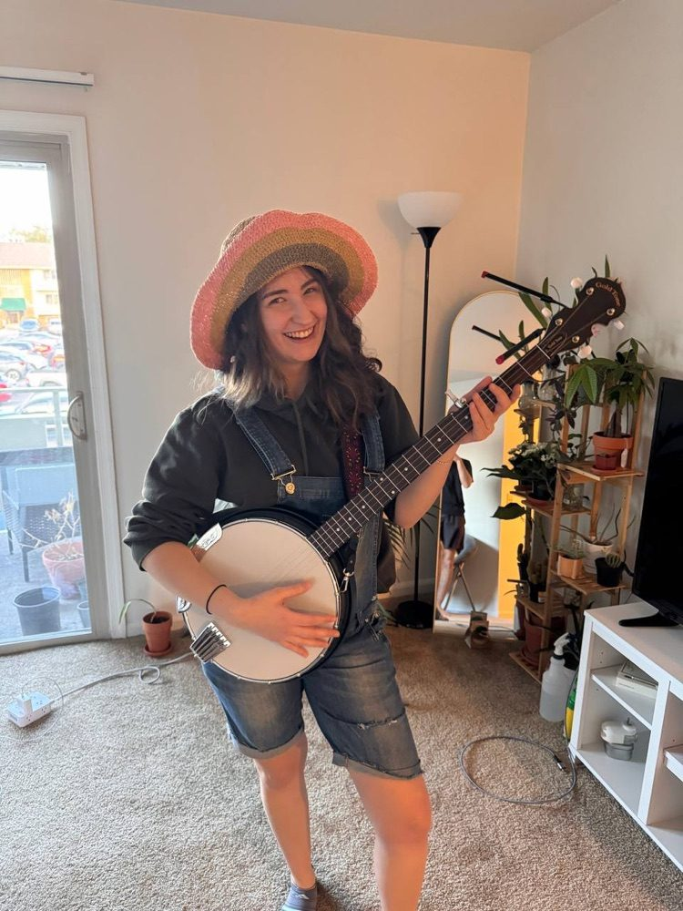
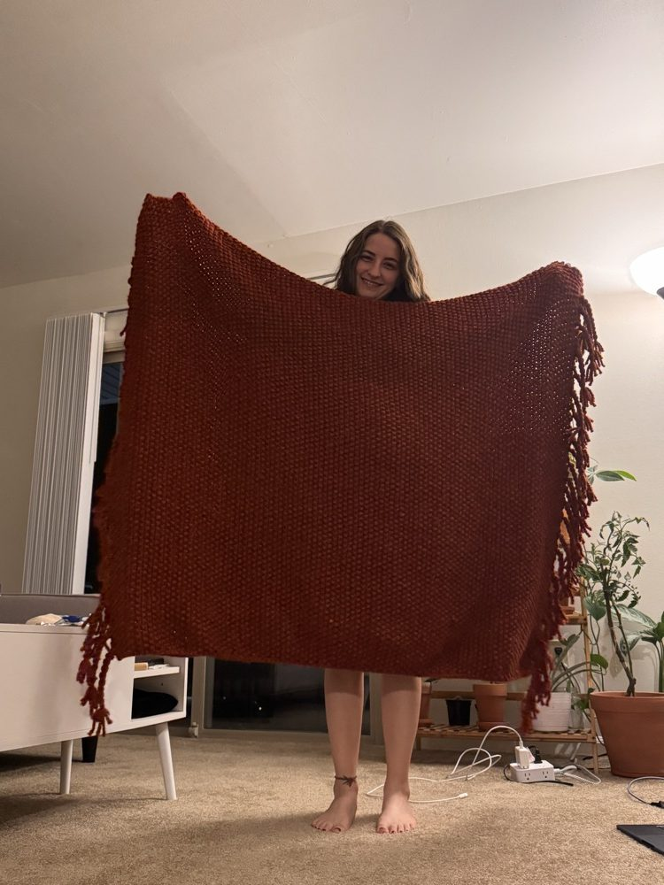
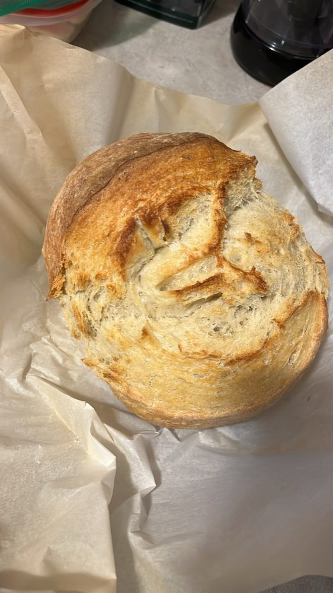
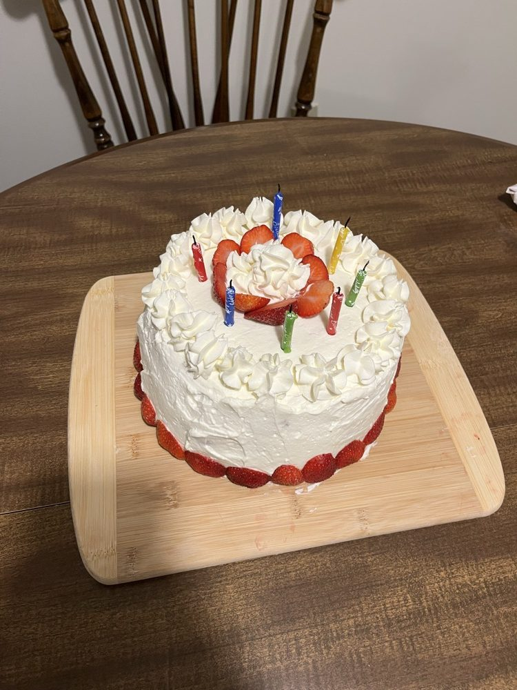

Curriculum Vitae
↓ Download full CV (PDF)
The full CV is also on this page as accessible text. The PDF is best for printing.
Education
Advisor: Dr. Eugenia H. Rho · SAIL Lab
Advisor: Dr. Reyyan Yeniterzi
Honors, Awards & Recognitions
Additional stipend funding totaling $805
Awarded for academic excellence and research contributions in graduate studies
Selected to present dissertation research at CSCW 2026
Additional stipend funding totaling $750
Additional stipend funding totaling $300
Research funding totaling $500
Awarded to fund research on designing neuro-affirming human–AI interactions for coping with negative self-talk in autistic adults
Monthly research stipend
Awarded by the Scientific and Technological Research Council of Türkiye as a researcher
Datasets & Software
Web platform for real-time dyadic text conversations with message-level annotation
Currently being used to collect a participant-annotated corpus of 150 dyadic conversations
5,000 Turkish tweets annotated for named entities, released with training scripts
Annotated Turkish tweets for hate speech detection, released with benchmark classifiers
Invited Talks
Virginia Tech Center for Autism Research, Biennial Spring Autism Conference
Virginia Tech Center for Human-Computer Interaction (CHCI) Seminar
Symposium on the Human-Centered Future of Work, Virginia Tech
Academic Service
CHI 2024, 2026 · CSCW 2024, 2025 · DIS 2026 · GROUP 2025 · EMNLP 2025, 2026
Computers in Human Behavior Reports
Personal
Outside of research, I like trying different things to keep myself busy. But as my mom says in Turkish, when it comes to hobbies "ayran gönüllüyüm," which basically means I get excited about new hobbies but can't stick with one for too long. These days, maybe because of the Appalachian influence, I guess, I've been into playing banjo, knitting, and baking.

🪕 Banjo
I've been playing the banjo for more than a year now! I'll let everyone know when I have my first live performance!

🧶 Knitting
This is something I share with my mom (she's the real pro!). I knitted this blanket last year, and my next projects are a scarf and learning enough crochet to make an Appa plushie!


🍞 Baking
I LOVE baking! I've been experimenting with different bread and cake recipes. I even made this birthday cake! Maybe I'll make my dream of opening a bakery come true one day, who knows?
🗾 Learning Japanese
I recently started learning Japanese! Because why not? It's always fun to learn a new language.
📺 Anime
I've been watching more anime lately! So far, I've watched Attack on Titan, Jujutsu Kaisen, Fullmetal Alchemist, and Demon Slayer. Cowboy Bebop is next and I'm always open to recommendations!
Accessibility statement
I want this site to work for everyone, including people who use screen readers, keyboards, voice control, or magnification, and people who need different colors, fonts, or spacing. I aim to meet the Web Content Accessibility Guidelines (WCAG) 2.2, level AA.
What you can change
Open Accessibility in the top menu to find these settings. Your choices are saved in your browser only.
- OpenDyslexic font
- High contrast (also turned on automatically if your device asks for more contrast)
- Text size: default, large, or larger
- More space between lines, words, and letters
- Narrower lines of text
- A simplified, calmer layout without tinted backgrounds or hover effects
- Reduced motion (on by default)
- Light, dark, or system color theme
Other support
- A "Skip to main content" link, full keyboard navigation, and visible focus outlines
- Each page has its own web address, so the Back button and shared links work
- Text descriptions for images and figures
- Support for Windows High Contrast and other forced-colors modes
Known limitations
- The CV in PDF form is not yet a tagged (screen-reader-ready) PDF. The same content is on the CV page as text.
- Some paper links lead to publisher websites that I do not control.
- I have checked this site with automated tools and by keyboard. I have not yet completed a full screen-reader review.
Feedback
If something on this site is hard to use, please tell me at buse@vt.edu. I will do my best to fix it quickly.
Last reviewed: October 2026